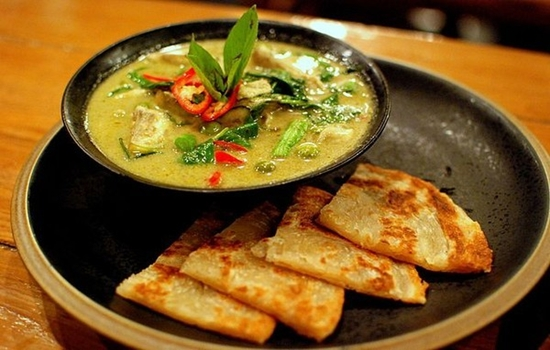

Cà ri nướng

- Khẩu phần 4
- Chuẩn bị 15 phút
- Thực hiện 45 phút
Nguyên liệu
- 3 đùi gà
- 50g nấm rơm
- 2 trứng gà
- 1/4 quả ớt chuông đỏ
- 1/2 củ hành tây
- 1 nhánh lá cà ri tươi
- 1 thìa súp cà ri Ấn
- 2 thìa súp kem tươi
- 100g sữa tươi
- 1/2 chén nước cốt dừa
- 1 thìa cà phê bơ
- 2 thìa súp bột mì, ít giấy bạc, bánh mì ăn kèm
- 1 thìa súp dầu ăn, 1 thìa súp nước cốt tỏi, 1/2
thìa cà phê ớt bột Huế, 1/4 thìa cà phê muối, 1 thìa cà phê đường, 1/2 thìa
cà phê hạt nêm từ Thịt Thăn, Xương Ống và Tủy - Bổ sung Vitamin A
Hướng dẫn thực hiện
- Đùi gà lóc lấy nạc, bỏ xương, cắt miếng vuông, ướp với dầu ăn, nước cốt
tỏi, ớt bột Huế, muối, đường, hạt nêm từ Thịt thăn và Xương ống, để 10 phút
cho thấm, rắc bột mì vào áo đều thịt gà, chiên cho miếng gà săn lại, vớt ra
để ráo dầu
- Nấm rơm gọt bỏ gốc rửa sạch. Ớt chuông bỏ ruột, cắt miếng vuông. Hành
tây một phần băm nhỏ, một phần cắt miếng vuông
- Đánh tan trứng với kem tươi, sữa tươi và nước cốt dừa, lược lại cho mịn
- Xào thơm hành tây băm nhỏ, cho sả vào xào vừa vàng, cho tiếp lá cà ri,
bơ, 1 thìa bột mì xào sơ, rồi cho gà vào, đảo đều cho thấm gia vị, nêm 1
thìa cà phê đường, 2 thìa cà phê hạt nêm từ Thịt thăn và Xương ống,
cho vào bát hoặc thố, cho hỗn hợp trứng sữa lên trên, đem nướng khoảng 15-20
phút, ở 200 độ C, để lửa trên dưới, lấy khuôn ra, bọc giấy bạc kín lại, cho
vào lò nướng tiếp 30 phút đến khi cà ri đặc lại, thử không dính tăm là được.
- Dọn ra bàn ăn kèm với bánh mì, dùng nóng.